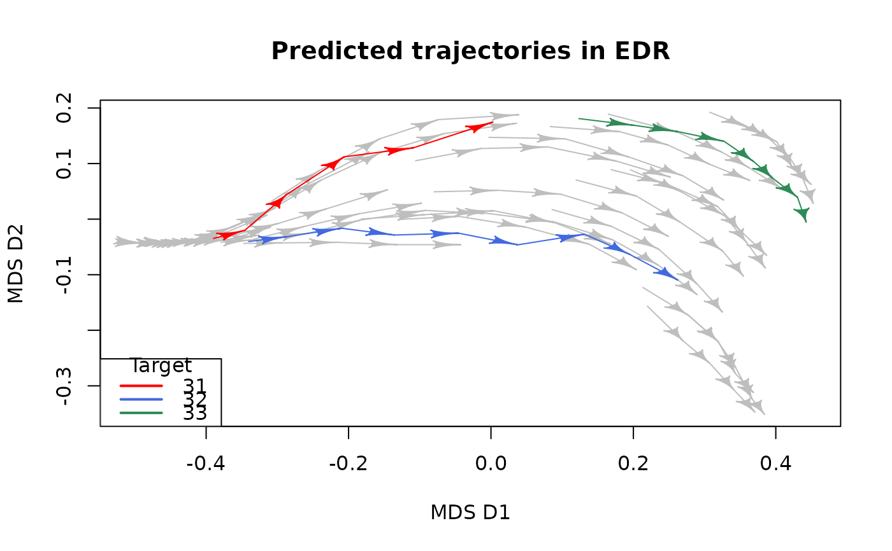
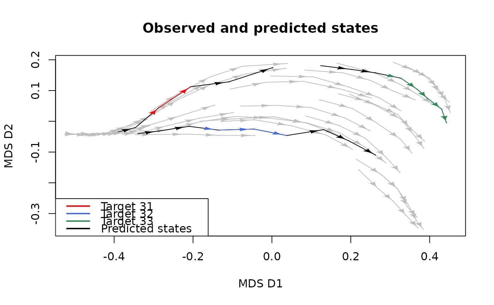
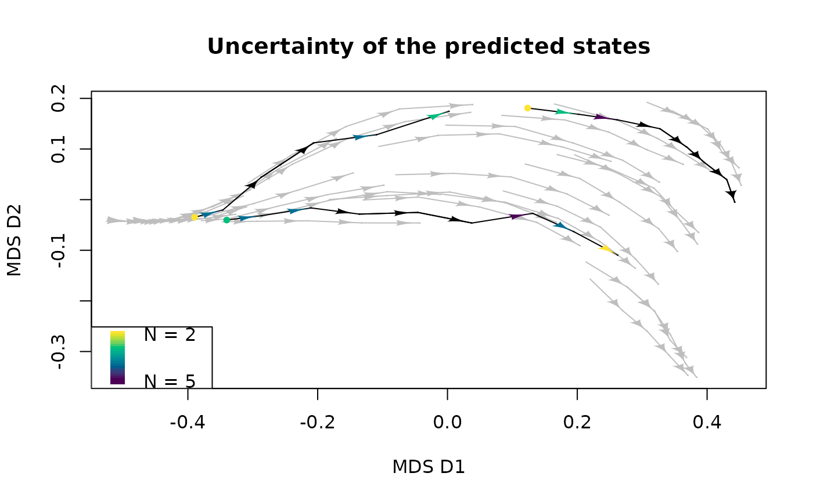

Represent predicted trajectories in the state space of an Ecological Dynamic Regime
(EDR) distinguishing between the observed states belonging to the target
and the forecasted states using the function petra_edr().
Arguments
- x
Object of class
PETRAreturned bypetra_edr()usingreturn_args = T.- petra.colors
Specification for the color of all predicted trajectories (defaults red) or a vector with length equal to the number of predicted trajectories in
xindicating the color for each predicted trajectory.- target.colors
Specification for the color of the observed states (target) within a predicted trajectory in
xor a vector with length equal to the number of predicted trajectories inxindicating a color for each target.- traj.colors
Specification for the color of the observed trajectories in the EDR (defaults grey).
- uncert.metric
Column name of
x$predicted_distused to display predicted states with a gradient color depending on that metric. One of"N","mean_dist","min_dist","max_dist".- uncert.colors
Vector of colors used to generate a gradient depending on the values of
uncert.metric.- uncert.range
Numeric vector including the minimum and maximum values to scale
uncert.metric.- coord
Data frame containing the coordinates of all trajectory states in an ordination space (including the predicted states).
- trajectories
Vector indicating the trajectory or site to which each state in
coordbelongs.- states
Vector of integers indicating the order of the states in
coordfor each trajectory.- axes
An integer vector indicating the pair of axes in the ordination space to be plotted.
- ...
Arguments for
plot_edr().
Value
Graphical representation of a set of individual trajectories and the predicted
trajectories in an ordination space defined by coord or calculated by applying
metric multidimensional scaling (mMDS; Borg and Groenen, 2005) to a dissimilarity
matrix computed from the arguments used in petra_edr() to generate x.
References
Borg, I., & Groenen, P. J. F. (2005). Modern Multidimensional Scaling (2nd ed.). Springer.
Sánchez-Pinillos M., Fortin, M-J., Messier, C., Kneeshaw, D. 2026. Forecasting ecological trajectories from ecological dynamic regimes to improve resilience analysis. Methods in Ecology and Evolution. doi:10.1111/2041-210x.70372
See also
petra_edr() for predicting ecological trajectories from EDRs.
MPD() for estimating the prediction accuracy of petra-edr() outputs.
plot_edr() for representing EDRs in a multidimensional state space.
Examples
if (requireNamespace("vegan", quietly = TRUE)) {
# Compute PETRA-EDR ---------------------------------------------------------
# State variables of the states in the EDR and the target
EDR_var <- EDR_data$EDR3$abundance
target_var <- EDR_data$EDR3_disturbed$abundance[disturbed_states == 0]
# Define state_var including the state variables for the states in the EDR and
# the targets
state_var <- data.frame(rbind(EDR_var[, paste0("sp", 1:12)],
target_var[, paste0("sp", 1:12)]))
# Compute PETRA-EDR for each target. Set return_args = TRUE
petra <- petra_edr(state_var = state_var,
trajectories = c(EDR_var$traj, target_var$traj),
states = c(EDR_var$state, target_var$state),
targets = unique(target_var$traj),
k = 5L, minPts = 2L,
d_function = "vegan::vegdist",
d_args = list(x = state_var, method = "bray"),
return_args = TRUE)
# Recalculate state_var and d, including the data for the predicted trajectories
state_var <- rbind(EDR_var[, paste0("sp", 1:12)],
petra$state_var)
d <- vegan::vegdist(state_var, method = "bray")
# Compute PCoA (optional)
pcoa <- cmdscale(d = d)#'
# Example 1 -----------------------------------------------------------------
# Display each predicted trajectories with different colors
plot(x = petra,
petra.colors = c("red", "royalblue", "seagreen"),
traj.colors = "grey",
coord = pcoa,
trajectories = c(EDR_var$traj, petra$trajectories),
states = as.integer(c(EDR_var$state, petra$states)),
xlab = "MDS D1", ylab = "MDS D2",
main = "Predicted trajectories in EDR")
legend("bottomleft", legend = unique(target_var$traj),
lwd = 2,
col = c("red", "royalblue", "seagreen"),
title = "Target")
# Example 2 -----------------------------------------------------------------
# Identify the observed states with a different color
plot(x = petra,
petra.colors = "black",
target.colors = c("red", "royalblue", "seagreen"),
traj.colors = "grey",
coord = pcoa,
trajectories = c(EDR_var$traj, petra$trajectories),
states = as.integer(c(EDR_var$state, petra$states)),
xlab = "MDS D1", ylab = "MDS D2",
main = "Observed and predicted states")
legend("bottomleft",
legend = c(paste0("Target ", unique(target_var$traj)), "Predicted states"),
lwd = 2,
col = c("red", "royalblue", "seagreen", "black"))
# Example 3 -----------------------------------------------------------------
# Display predicted states based on an uncertainty metric
plot(x = petra,
petra.colors = "black",
target.colors = "black",
traj.colors = "grey",
uncert.metric = "N",
uncert.colors = hcl.colors(4, rev = TRUE),
coord = pcoa,
trajectories = c(EDR_var$traj, petra$trajectories),
states = as.integer(c(EDR_var$state, petra$states)),
xlab = "MDS D1", ylab = "MDS D2",
main = "Uncertainty of the predicted states")
legend("bottomleft", legend = c(paste0("N = ", min(petra$predicted_dist$N)),
rep(NA, 18),
paste0("N = ", max(petra$predicted_dist$N))),
fill = hcl.colors(20, rev = TRUE), border = NA, y.intersp = 0.2)
}


